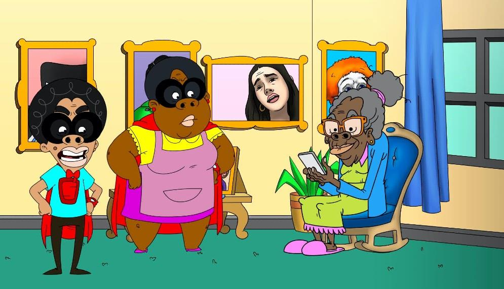
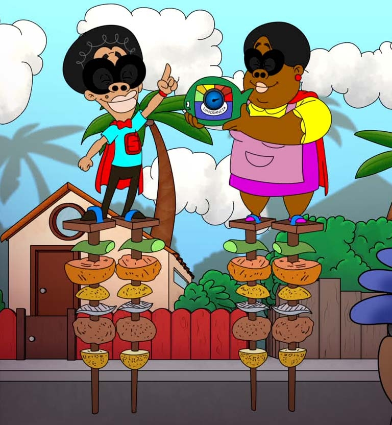

Sobre Nosotros
¡Bienvenidos al Diccionario Hablando a lo Colombiano! Este proyecto nació de nuestra fascinación por la riqueza y diversidad del lenguaje colombiano. Somos un grupo de amantes de la cultura, el humor y las palabras, y nos dimos cuenta de que las jergas colombianas, aunque divertidas y únicas, a menudo son difíciles de entender para quienes no están familiarizados con ellas. Así que decidimos crear este espacio para recopilar, explicar y celebrar las expresiones más auténticas de nuestro país.
¿Como surguio todo?
Todo comenzó en una reunión de amigos, donde nos dimos cuenta de que cada región de Colombia tiene su propia forma de hablar, llena de expresiones únicas y llenas de significado. Nos preguntamos: ¿por qué no crear un lugar donde todos puedan aprender y disfrutar de estas jergas? Así nació este diccionario, con el objetivo de ser una ventana a la cultura colombiana a través de sus palabras.
Objetivos
Preservar las expresiones populares que forman parte de nuestra identidad.
Educar a quienes quieran aprender más sobre el español colombiano.
Divertir a todos los que disfrutan del humor y la creatividad de nuestras jergas.
Nuestros Valores
Diversidad: Recopilamos jergas de todas las regiones de Colombia.
Inclusión: Queremos que todos, sin importar su origen, se sientan bienvenidos a aprender y compartir.
Autenticidad: Nos esforzamos por mantener el espíritu y el contexto original de cada expresión.